승강기산업기사 (2011-03-20 기출문제)
1과목: 승강기개론
1. 조속기의 과속스위치는 정격속도의 몇 배 이하에서 동작되어야 하는가?
- 1.1
- 1.3
- 1.5
- 1.8
(정답률: 88%)

2. 비상정지장치가 작동하였을 때 카 바닥의 수평도는 얼마를 유지해야 하는가?(오류 신고가 접수된 문제입니다. 반드시 정답과 해설을 확인하시기 바랍니다.)
- 1/10 이하
- 1/20 이하
- 1/30 이하
- 1/40 이하
(정답률: 46%)
3. 로프식 엘리베이터의 승강로에 대한 설명으로 올바르지 않은 것은?
- 소방법에 의한 비상방송용 스피커 등은 승강로에 설치할 수 있다.
- 피트 깊이가 2m를 초과하는 경우에는 출입구를 설치할 수 있다.
- 피트 아래를 통로로 사용할 경우에는 피트 바닥을 2중 슬라브로 하여야 한다.
- 승강기의 정격속도가 높아지면 피트 깊이는 늘어난다.
(정답률: 63%)
4. 로프식 엘리베이터에서 제어방식이 발전해 온 순서가 맞는 것은?
- 교류귀환제어 → 교류2단제어 → VVVF제어
- 교류귀환제어 → VVVF제어 → 교류2단제어
- 교류2단제어 → 교류귀환제어 → VVVF제어
- 교류2단제어 → VVVF제어 → 교류귀환제어
(정답률: 78%)
5. 유아뵹 고압 고무호스 표면에 표시하지 않아도 되는 것은?
- 제조년월
- 명칭 및 호칭
- 제조자명 또는 그 약호
- 굴곡반경
(정답률: 75%)
6. 3~8대의 엘리베이터가 병설될 때 개개의 카를 합리적으로 운행하는 방식으로 교통수요의 변화에 따라 카의 운전내용을 변화시켜서 가장 적절하게 대응하게 하는 방식은?
- 군관리방식
- 군승합전자동식
- 양방향승합전자동식
- 단식자동식
(정답률: 88%)
7. 승강장 도어가 레일 끝을 이탈(overrun)하는 것을 방지하기 위해 설치하는 것은?
- 보호판
- 행거레일
- 스톱퍼
- 행거롤러
(정답률: 86%)
8. 종단층 강제 감속장치의 작동과 가장 관련이 있는 부품은?
- 유압식 완충기
- 광전장치
- 초음파 감지장치
- 록다운 정지장치
(정답률: 47%)
9. 정격속도가 분당 45m인 엘리베이터에 있어서 조속기의 과속스위치가 작동해야 하는 엘리베이터의 속도는?
- 60m/min 이하
- 63m/min 이하
- 65m/min 이하
- 68m/min 이하
(정답률: 63%)
10. 카 위나 카 내부에서 동력을 차단하는 장치로, 카 내부에서는 키를 사용해 작동하게 하거나, 덮개가 있는 상자 내에 장채해야 하는 스위치는?
- 3로 스위치
- 정지 스위치
- 리미트 스위치
- 토글 스위치
(정답률: 79%)
11. 로프식 엘리베이터에서 카 천장에 설치된 비상구출구의 작은쪽 변의 길이가 몇 [m] 이상이어야 하는가?(관련 규정 개정전 문제로 여기서는 기존 정답인 1번을 누르면 정답 처리됩니다. 자세한 내용은 해설을 참고하세요.)
- 0.4
- 0.5
- 0.6
- 0.7
(정답률: 77%)
12. 엘리베이터용 레일의 치수를 결정하는데 적용되는 요소가 아닌 것은?
- 불균형한 큰 하중이 적재될 경우를 고려
- 지진시 레일 휨이나 응력의 탄성한계를 고려
- 엘리베이터의 정격속도에 대한 고려
- 안전장치가 작동했을 때에 좌굴하중의 고려
(정답률: 76%)
13. 정격속도 1⑤m/min, 적재하중 1600kg, 오버밸런스율 50%, 전체 효율 70%인 엘리베이터용 전동기의 용량은?
- 약 8.4 [kW]
- 약 13.7 [kW]
- 약 15.7 [kW]
- 약 19.6 [kW]
(정답률: 53%)
14. 교류 귀환전압제어는 무엇을 비교하여 싸이리스터의 점호각을 바꿔 유도 전동기의 속도를 제어하는가?
- 카의 실제속도와 점호각
- 지령속도와 점호각
- 카의 실제속도와 지령속도
- 전압과 주파수
(정답률: 65%)
15. 유압엘리베이터의 각 부품에 대한 설명으로 틀린 것은?
- 안전밸브는 압력이 과도하게 높아지는 것을 방지한다.
- 사이렌서는 진동·소음을 감소시킨다.
- 이물질을 제거하는 장치는 스트레이너이다.
- 펌프는 강제송유식의 기어펌프를 많이 사용한다.
(정답률: 75%)
16. 기계실의 바닥면적은 승강로 수평투영면적의 몇 배 이상이어야 하는가?
- 1.5
- 2.0
- 2.5
- 3.0
(정답률: 82%)
17. 엘리베이터용 승강장 도어 표기를 “2S” 라고 할 때 숫자 “2” 와 문자 “S” 가 나타내는 것은?
- “2” : 도어의 형태, “S” : 중앙열기
- “2” : 도어의 형태, “S” : 측면열기
- “2” : 도어의 매수, “S” : 중앙열기
- “2” : 도어의 매수, “S” : 측면열기
(정답률: 86%)
18. 엘리베이터를 기계실 위치에 따라 분류한 것이 아닌 것은?
- 정상부형 엘리베이터
- 하부형 엘리베이터
- 축부형 엘리베이터
- 경사형 엘리베이터
(정답률: 84%)
19. 엘리베이터용 전동기에 요구되는 특성을 잘못 설명한 것은?
- 기동 토크가 클 것
- 기동 전류가 작을 것
- 빈번한 운전에 대해서도 열적으로 견딜 것
- 회전부분의 관성 모멘트가 클 것
(정답률: 74%)
20. 비상용 엘리베이터에서 1차 소방스위치(키 스위치)를 조작한 후 동작 설명으로 옳은 것은?
- 행선층버튼을 계속 누르고 있을 때 문이 닫히지 않는다.
- 문닫힘 안전장치가 작동하여야 한다.
- 과부하감지장치가 작동하지 않아야 한다.
- 문닫힘버튼을 계속 누르고 있을 때 문이 닫히지 않는다.
(정답률: 77%)
2과목: 승강기설계
21. 카 레일용 브래킷에 관한 설명으로 틀린 것은?
- 구조 및 형태는 레일을 지지하기에 견고하여야 한다.
- 사다리형 브래킷의 경사부 각도는 15~30도로 제작 한다.
- 벽면으로부터 1000m 이하로 설치하여야 한다.
- 콘크리트에 대하여는 앵커볼트로 견고히 부착하여야 한다.
(정답률: 83%)
22. 세로탄성계수 E, 가로탄성계수 G, 포아송 수 m 사이의 관계를 바르게 나타낸 것은?
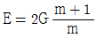
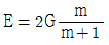
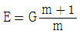
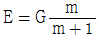
(정답률: 61%)
23. 엘리베이터용 전동기의 용량 결정과 관계가 없는 것은?
- 정격속도
- 정격하중
- 로핑방식
- 주행거리
(정답률: 72%)
24. 다음 중 타이 브래킷에 대한 설명으로 옳은 것은?
- 카측 레일에만 설치할 수 있다.
- 균형추측 레일에만 설치할 수 있다.
- 레일의 강도와는 아무관계가 없다.
- 카측, 균형추측 모두 설치할 수 있다.
(정답률: 64%)
25. 회전수가 1000[rpm] 이고, 출력이 7.5[kW]인 전동기의 전부하토크는?
- 약 7.3[kg·m]
- 약 73[kg·m]
- 약 730[kg·m]
- 약 7300[kg·m]
(정답률: 55%)
26. 엘리베이터 교통량 계산의 주목적은?
- 승강기검사 기준에 정해져 있기 때문에 강제적으로 엘리베이터 대수를 산출하기 위함이다.
- 충분한 여유를 갖기 위함이다.
- 건축법에 정해져 있기 때문에 수송시간을 계산하여야 한다.
- 최소 비용으로 최적의 엘리베이터를 설치하기 위함이다.
(정답률: 77%)
27. 주행여유(Runby)에 대한 설명 중 틀린 것은?
- 카가 최상층에 정지 했을 때 균형추와 완충기와의 거리를 말한다.
- 카가 최하층에 정지 했을 때 카와 완충기사이의 거리를 말한다.
- 유입완충기 적용시 속도에 관계없이 주행여유와 최소거리는 규정하지 않는다.
- 스프링 완충기 적용시 카측의 최대거리는 900mm로 규정한다.
(정답률: 59%)
28. 엘리베이터 동력전원 설계시 부등률에 대한 설명으로 틀린 것은?
- 교통량이 많은 건물에서는 부등률이 크다.
- 엘리베이터 기동빈도와 밀접한 관계가 있다.
- 동일 건물내 비상용의 경우는 100% 동시사용으로 본다.
- 2대의 엘리베이터에 대하여는 전부하 상승 가속전류에 대한 부등률은 2 이상이다.
(정답률: 68%)
29. 5분간 수송능력 280명, 5분간 전교통 수요가 2800명 일 경우 필요한 엘리베이터 대수는?
- 5
- 10
- 15
- 20
(정답률: 80%)
30. 정격하중 1000kgf, 카 자체하중 1300kgf, 속도 60m/min용 엘리베이터를 오버밸런스율 40%로 설정할 경우 균형추의 무게는?
- 1520 [kgf]
- 1700 [kgf]
- 1920 [kgf]
- 2300 [kgf]
(정답률: 63%)
31. 2대의 엘리베이터 배치에 대한 내용 중 틀린 것은?
- 2대 나란히 배열
- 2대 서로 마주보는 배열
- 2대 격리(복도)배열
- 마주보는 배열은 나란한 배열보다 승강장이 더 넓어야 한다.
(정답률: 71%)
32. 교통량 계산시 출근시간의 수송능력 목표치(집중률)가 가장 큰 것은?
- 관청
- 준사전용
- 임대 사무실
- 일사전용
(정답률: 56%)
33. 다음에 열거한 전동기의 절연종별 중에서 E종보다 절연의 허용최고온도가 낮은 것은?
- A종
- B종
- F종
- H종
(정답률: 77%)
34. 에스컬레이터의 적재하중을 표시한 것으로 옳은 것은? (단, P는 적재하중[kg], A는 스텝면의 수평투영면적[m2])
- P = 70 · A
- P = 170 · A
- P = 270 · A
- P = 370 · A
(정답률: 75%)
35. 엘리베이터 가이드 레일의 강도를 계산할 때 고려하지 않아도 되는 사항은?
- 레일의 단면계수
- 레일 단면의 조도
- 카나 균형추의 총중량
- 레일 브라켓의 설치 간격
(정답률: 83%)
36. 후크의 법칙과 관련된 계산식 중 틀린 것은? (단, E : 종탄성계수, W : 하중, ℓ : 원래의 길이, σ : 인장응력, λ : 변형된 길이, ε : 종변형율, G : 횡탄성계수, m : 포아송수)
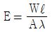
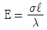
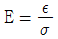
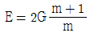
(정답률: 74%)
37. 와이어로프를 엘리베이터에 적용시킬 때의 설명으로 틀린 것은?
- 주로프의 안전율은 10 이상이 되도록 하고, 직경은 6mm 이상으로 사용한다.
- 단부는 1가닥마다 로프소켓에 비바트채움을 하거나 체결식 로프 소켓을 사용하여야 한다.
- 권동식인 경우 권동측의 끝부분을 1가닥마다 클램프 고정으로 할 수 잇다.
- 카 1대에 대해 3가닥 이상이나 권동식일 때는 2가닥 이상이다.
(정답률: 74%)
38. 엘리베이터에 사용하는 완충기(Buffer)의 설치 위치는?
- 카 하부와 균형추 하부에 설치
- 카 하부와 균형추 상부에 설치
- 기계실 하부와 카 하부에 설치
- 균형추 하부에만 설치
(정답률: 81%)
39. 원통코일 스프링 설계에서 스프링 상수에 대한 설명으로 옳은 것은?
- 같은 하중을 받을 때, 스프링의 휘는 양은 스프링 상수의 제곱에 반비례한다.
- 같은 하중을 받을 때, 스프링의 휘는 양은 스프링 상수의 제곱에 비례한다.
- 같은 하중을 받을 때, 스프링의 휘는 양은 스프링 상수에 비례한다.
- 같은 하중을 받을 때, 스프링의 휘는 양은 스프링 상수에 반비례한다.
(정답률: 34%)
40. 건축법령상 비상용엘리베이터에 관한 설명으로 틀린 것은?(오류 신고가 접수된 문제입니다. 반드시 정답과 해설을 확인하시기 바랍니다.)
- 건물높이 41m 이상으로 각 층의 바닥면적 중 최대 바닥면적이 1500m2 이하인 건축물에는 1대 이상 설치해야 한다.
- 건물높이 41m 이상으로 각 층의 바닥면적의 합계가 600m2 이하인 건축물에는 설치하지 않아도 된다.
- 건물높이 41m를 넘고 바닥면적 중 최대 바닥면적이 1500m2를 넘는 경우에는 매 3000m2 이내마다 1대씩 가산하여 설치해야 한다.
- 2대 이상의 비상용 엘리베이터를 설치할 경우 소화에 지장이 없도록 일정간격을 두고 설치하여야 한다.
(정답률: 59%)
3과목: 일반기계공학
41. 유압프레스에서 용량이 5kN이고 프레스 효율이 80%, 단조율의 유효단면적이 300mm2일 때, 단조 재료의 변형저항은 약 몇 N/mm2 인가?
- 10.3
- 13.3
- 15.3
- 16.7
(정답률: 56%)
42. 베어링과 축, 피스톤과 실린더 등과 같이 서로 접촉하면서 운동하는 접촉면에 마찰을 적게 하기위해 사용되는 것으로 가장 적합한 것은?
- 냉매
- 절삭유
- 윤활유
- 냉각수
(정답률: 87%)
43. 모듈 6, 기어의 이가 22개, 97개인 한 쌍의 표준평기어가 외접하여 물려있을 때 중심거리는 얼마인가?
- 132 mm
- 357 mm
- 450 mm
- 714 mm
(정답률: 66%)
44. 체인의 원동차 잇수(Z1)가 20개, 회전수(N1) 300rpm 이고, 종동차 잇수(Z2)가 30개일 때 종동차의 회전수(N2)와 종동차의 속도(V2)는 각각 얼마인가? (단, 종동차의 피치는 15mm 이다.)
- N2 = 200 rpm, V2 = 1.5 m/s
- N2 = 200 rpm, V2 = 2.5 m/s
- N2 = 400 rpm, V2 = 1.5 m/s
- N2 = 400 rpm, V2 = 2.25 m/s
(정답률: 39%)
45. 연삭숫돌의 결함에서 숫돌 입자의 표면이나 기공에 칩(chip)이 끼어 연삭성이 나빠지는 현상은?
- 트루잉
- 로딩
- 글레이징
- 드레싱
(정답률: 55%)
46. 원통형 케이싱 안에 편심 회전자가 있고 그 회전자의 홈속에 판 모양의 깃이 원심력 또는 스피링 장력에 의하여 벽에 밀착하면서 회전하여 액체를 압송하는 펌프는?
- 피스톤펌프
- 나사펌프
- 베인펌프
- 기어펌프
(정답률: 59%)
47. 그림과 같이 로프로 고정하여 A 점에 1000N의 무게를 매달 때 AC로프에 생기는 응력은 약 몇 N/cm2 인가? (단, 로프 지름은 3cm 이다.)
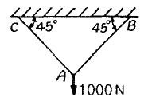
- 100
- 210
- 431
- 640
(정답률: 51%)
48. 소성가공을 할 때 열간가공과 냉간가공을 구분하는 온도와 가장 관계가 있는 것은?
- 재결정 온도
- 용융 온도
- 동소변태온도
- 임계 온도
(정답률: 76%)
49. 10 kN·m의 비틀림 모멘트와 20 kN·m의 굽힘 모멘트를 동시에 받는 축의 상당 굽힘 모멘트는 약 몇 kN·m 인가?
- 2.18
- 21.18
- 211.8
- 230
(정답률: 68%)
50. 알루미늄 분말, 산화철 분마과 점화제의 혼합 반응으로 열을 발생시켜 용접하는 방법은?
- 테리밋 용접
- 피복 아크 용접
- 일렉트로 슬래그 용접
- 불활성 가스 아크 용접
(정답률: 82%)
51. 주물에서 기공(blow hole)의 유무를 검사하기 위한 비파괴시험 방법에 속하지 않는 것은?
- 자기 탐상법
- 현미경 탐상법
- 초음파 탐상법
- 방사선 탐상법
(정답률: 69%)
52. 유효낙차가 100m 이고 유량이 200m3/s 인 수력 발전소의 수차에서 이론 출력을 계산하면 몇 kW인가?
- 412 × 103
- 326 × 103
- 196 × 103
- 116 × 103
(정답률: 65%)
53. 두 축이 평행하고, 두 축의 중심선이 약간 어긋났을 경우에 각속도의 변화없이 토크를 전달시키려고 할 때 사용하는 커플링은?
- 머프 커플링
- 플랜지 커플링
- 올덤 커플링
- 유니버셜 커플링
(정답률: 60%)
54. 유압기기의 부속장치 중 유압에너지 압력에 대해 맥동 제거, 압력 보상, 충격 완화 등의 역할을 하는 것은?
- 스트레이너
- 중압기
- 축압기
- 필터 엘리먼트
(정답률: 63%)
55. 축열실과 반사로로 사용하여 장입물을 용해 정련하는 방법으로 우수한 강을 얻을 수 있고 다량생산에 적합한 용해로는?
- 도가니로
- 전로
- 평로
- 전기로
(정답률: 70%)
56. 주철의 성질에 대한 설명으로 틀린 것은?
- 압축강도가 크다.
- 절삭성이 우수하다.
- 융점이 낮고 유동성이 양호하다.
- 관련, 담금질, 뜨임이 가능하다.
(정답률: 54%)
57. 이끝원의 지름이 126 mm, 잇수가 40인 기어의 모듈은?
- 3
- 4
- 5
- 6
(정답률: 74%)
58. 50000 N·cm 의 굽힘 모멘트를 받는 단순보의 단면계수가 100cm3 이면 이 보에 발생되는 굽힘 응력은 몇 N/cm2 인가?
- 250
- 500
- 750
- 1000
(정답률: 75%)
59. 같은 전단응력이 작용하는 보에서 원형단면의 지름을 2배로 하면 전단응력(τ)은 얼마인가?
- τ/2
- τ/4
- τ/8
- τ/16
(정답률: 54%)
60. 축의 허용전단응력이 3 N/mm2이고, 축의 비틀림모멘트가 3.0×105 N·mm 일 때 축의 지름은?
- 63.4 mm
- 72.6 mm
- 79.9 mm
- 83.4 mm
(정답률: 41%)
4과목: 전기제어공학
61. 그림과 같은 계전기 접점회로의 논리식은?
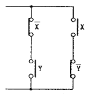
- XY
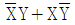
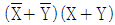
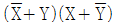
(정답률: 76%)
62. 어떤 코일에 흐르는 전류가 0.01초 사이에 일정하게 50[A]에서 10[A]로 변할 때 20[V]의 기전력이 발생한다고 하면 자기인덕턴스는 몇 [mH] 인가?
- 5
- 40
- 50
- 200
(정답률: 44%)
63. 유도전동기의 속도제어에 사용할 수 없는 전력 변환기는?
- 인버터
- 사이클로 컨버터
- 위상제어기
- 정류기
(정답률: 70%)
64. 제어계에서 동작 신호(편차)에 비례하는 조작량을 만드는 제어 동작을 무엇이라 하는가?
- 비례 동작(P동작)
- 비례 적분 동작(PI 동작)
- 비례 미분 동작(PD 동작)
- 비례 적분 미분 동작(PID 동작)
(정답률: 55%)
65. 주파수 60[Hz]의 정현파 교류에서 위상차
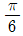
[rad]은 약 몇 초의 시간차인가?- 2.4 × 10-3
- 2 × 10-3
- 1.4 × 10-3
- 1 × 10-3
(정답률: 51%)
66. 다음 내용의 ( )안에 차례로 들어갈 알맞은 내용은?
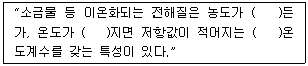
- 진하, 낮아, +
- 진하, 높아, -
- 연하, 낮아, -
- 연하, 높아, +
(정답률: 65%)
67. 피드배게어로서 서보기구에 해당하는 것은?
- 석유화학공장
- 발전기 정전압장치
- 전철표 자동판매기
- 선박의 자동조타
(정답률: 74%)
68. 다음 블록선도 중 안정한 계는?
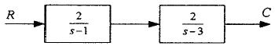
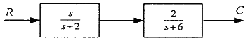
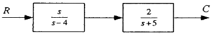
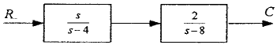
(정답률: 62%)
69. 전기로의 온도를 1000℃로 일정하게 유지시키기 위하여 열전온도계의 지시값을 보면서 전압조정기로 전기로에 대한 인가전압을 조절하는 장치가 있다. 이 경우 열전온도계는 다음 중 어느 것에 해당 되는가?
- 조작부
- 검출부
- 제어량
- 조작량
(정답률: 61%)
70. 그림과 같은 회로의 합성저항은 몇 [Ω] 인가?
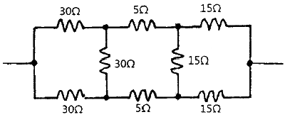
- 25
- 30
- 35
- 50
(정답률: 41%)
71. 내부 장치 또는 공간을 물질로 포위시켜 외부 자계의 영향을 차폐시키는 방식을 자기차폐라 한다. 다음 중 자기차폐에 가장 좋은 물질은?
- 강자성체 중에서 비투자율이 큰 물질
- 강자성체 중에서 비투자율이 작은 물질
- 비투자율이 1보다 작은 역자성체
- 비투자율과 관계없이 두께에만 관계되므로 되도록 두꺼운 물질
(정답률: 55%)
72. 다음 블록선도에서 틀린 식은?
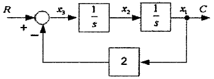
- x3(t) = r(t) - 2c(t)
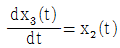
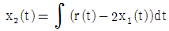
- x1(t) = c(t)
(정답률: 56%)
73. 다음 중 유도전동기의 회전력에 관한 설명으로 옳은 것은?
- 단자전압과는 무관하다.
- 단자전압에 비례한다.
- 단자전압의 2승에 비례한다.
- 단자전압의 3승에 비례한다.
(정답률: 56%)
74. 다음 중 서보기구에 속하는 제어량은?
- 회전속도
- 전압
- 위치
- 압력
(정답률: 75%)
75. 제벡 효과(Seebeck effect)를 이용한 센서에 해당하는 것은?
- 저항 변화용
- 인덕턴스 변화용
- 용량 변화용
- 전압 변화용
(정답률: 44%)
76. 전류계와 전압계의 측정범위를 확장하기 위하여 저항을 사용하는데, 다음 중 저항의 연결방법으로 알맞은 것은?
- 전류계에는 저항을 병렬연결하고, 전압계에는 저항을 직렬연결 해야 한다.
- 전류계 및 전압계에 저항을 병렬연결 해야 한다.
- 전류계에는 저항을 직렬연결하고, 전압계에는 저항을 병렬연결 해야 한다.
- 전류계 및 전압계에 저항을 직렬연결 해야 한다.
(정답률: 53%)
77. 220[V] 3상 4극 60[Hz]인 3상 유도전동기가 정격전압, 정격 주파수에서 최대 회전력을 내는 슬립은 16[%]이다. 200[V] 50[Hz]로 사용할 때 최대 회전력 방생 슬립은 약 몇 [%]가 되는가?
- 15.6
- 17.6
- 19.4
- 21.4
(정답률: 35%)
78. 전기기기의 보호와 운전자의 안전을 위해 사용되는 그림의 회로를 무엇이라고 하는가? (단, A와 B는 스위치, X1과 X2는 릴레이이다.)
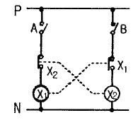
- 자기유지회로
- 일치회로
- 변환회로
- 인터록회로
(정답률: 69%)
79. 유도전동기의 기동방법 중 용량이 5[kW] 이하인 소용량 전동기에는 주로 어떤 기동법이 사용되는가?
- 전전압 기동법
- Y-△ 기동법
- 기동보상기법
- 리액터 기동법
(정답률: 56%)
80. 목표치가 미리 정해진 시간적 변화를 하는 경우 제어량을 변화시키는 제어를 무엇이라고 하는가?
- 정치제어
- 프로그래밍제어
- 추종제어
- 비율제어
(정답률: 62%)